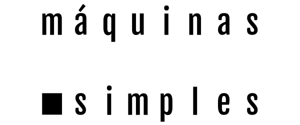

para ver
películas aún no hechas
para enterarse
sobre un sinfín de cosas
para vestir
nadie nos usa, a todos les gusta
para comer
a luca
para facilitar

soluciones ingeniosas
para jugar
ni con el último termina
❮
❯